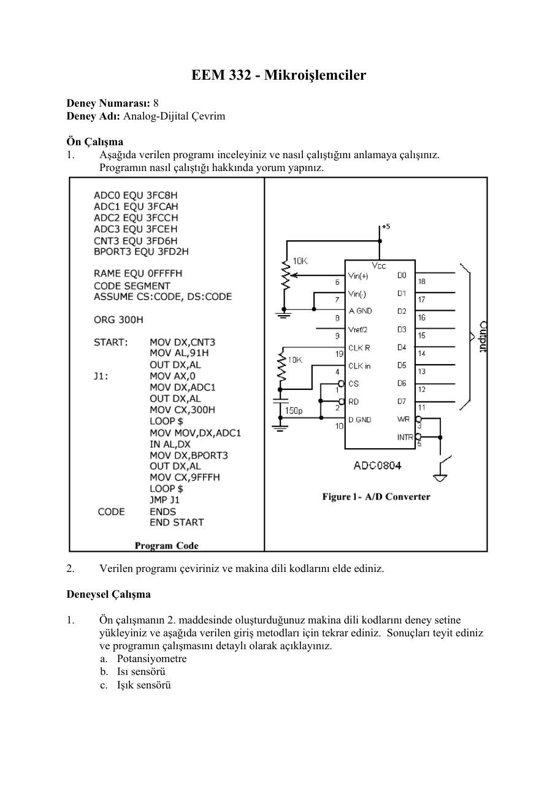
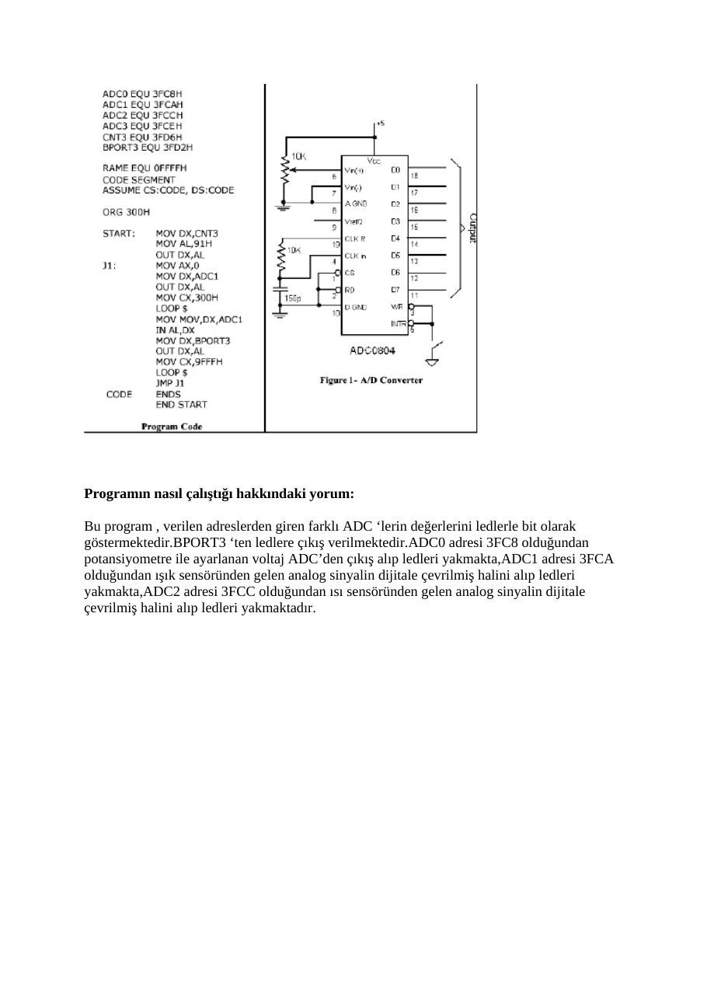

· EEM332
EEM332 Mikroişlemciler: Laboratuvar 7–9: SKC-86, ADC ve DAC
EEM332 – Mikroişlemciler · 09.05.2005 · 18.10.2026
Bu yazı, Başkent Üniversitesi EEM332 Mikroişlemciler ders arşivindeki ilgili notları ve uygulamaları bir araya getiriyor (2005–2015). SKC-86 deney setinde giriş-çıkış, ADC okuma, DAC ile testere dişi dalga ve deney raporları. Bir arkadaşın hazırladığı çalışmalar ve ders belgeleri birlikte aktarılmış; öğrenci adları, numaraları ve grup bilgileri çıkarılmıştır. Belgelerin PDF arşiv kopyaları ve varsa kaynak kodları yazının sonunda ZIP olarak indirilebilir.
eem332_lab07
EEM 332 - Mikroişlemciler Deney Numarası: 8 Deney Adı: SKC-86 Giriş ve Programlama
Ön Çalışma Laboratuvar saatinde ön çalışma toplanmayacaktır.
1) Web sitesinde verilen “SKC-86 Guide” adlı belgeyi okuyunuz.
2) Aşağıdaki programı inceleyiniz. Bu program önce SKC-86 setindeki LED’lerin tamamını
söndürür ve daha sonra kullanıcının ilgili butona basmasıyla, o butonla ilgili LED’i yakar.
;==========================================
;===== 8BIT Input/Output TEST PROGRAM =====
;===== FOR SKC - 86 =====
;==========================================CNT3 EQU 3FD6H
APORT3 EQU 3FD0H
BPORT3 EQU 3FD2H
CPORT3 EQU 3FD4H
RAME EQU 0FFFFHCODE SEGMENTASSUME CS:CODE, DS:CODE
ORG 0START: MOV SP,RAME
MOV AL,90H
MOV DX,CNT3
OUT DX,ALJ1: MOV DX,APORT3
IN AL,DX
NOT AL
MOV DX,BPORT3
OUT DX,AL
JMP J1CODE ENDS
END STARTDeneysel Çalışma
1) SKC-86’da CS=F000:0000 adresinde bulunan Örnek1 programını yükleyiniz. Bunun için
aşağıdaki adımları takip ediniz
“2/GO” tuşuna basın F000:0 girin “.” tuşuna basın
Programın yaptığı işi gözlemleyiniz.
2) Benzer şekilde CS=F000:0040 adresinde bulunan Örnek2 programını yükleyiniz.
3) Örnek3 programını aşağıdaki adımları uygulayarak yükleyiniz:
“OB” tuşuna basın 3F08 girin Sırasıyla “,” ve “0” ve “.” tuşlarına basın Sırasıyla “IB” ve “3F08” ve “,” tuşlarına basın
Ekranda gördüğünüz değerleri not ediniz. Potansiyometrenin konumunu değiştirerek yukarıdaki işlemleri tekrar ediniz. Değerleri not ediniz.
4) Turbo Debugger programını kullanarak ön çalışmada verilen programın makina dili
kodlarını elde ediniz. Tuş takımını kullanarak SKC-86’ya bu programı yükleyiniz.
Programın gerçekleştirdiği işlemi not ediniz.
5) Ön çalışmada verilen programda gerekli değişiklikleri yaparak yapılan işlemin tersinin
yapılmasını sağlayınız (ilk çalıştırıldığında bütün LED’ler yanar ve ilgili tuşlara basılmasıyla söner). Programın makina dili kodlarını elde ediniz ve deney setine yükleyiniz.
Programınızı ve yorumlarınızı ve önceki çalışmalarda gözlemlediklerinizi raporunuzda belirtiniz.
eem332_lab08
EEM 332 - Mikroişlemciler Deney Numarası: 8 Deney Adı: Analog-Dijital Çevrim
Ön Çalışma
1. Aşağıda verilen programı inceleyiniz ve nasıl çalıştığını anlamaya çalışınız.
Programın nasıl çalıştığı hakkında yorum yapınız.
2. Verilen programı çeviriniz ve makina dili kodlarını elde ediniz.
Deneysel Çalışma
1. Ön çalışmanın 2. maddesinde oluşturduğunuz makina dili kodlarını deney setine
yükleyiniz ve aşağıda verilen giriş metodları için tekrar ediniz. Sonuçları teyit ediniz ve programın çalışmasını detaylı olarak açıklayınız. a. Potansiyometre b. Isı sensörü c. Işık sensörü
2. Programın algoritmasını yazınız ve potansiyometre için çözünürlüğü (step size)
hesaplayınız.

eem332_lab09
EEM 332 - Mikroişlemciler Deney Numarası: 9 Deney Adı: Dijital-Analog Çevrim
Deneysel Çalışma
1. Aşağıda verilen testere dişi sinyal üreteci programını makina dili kodlarına
çeviriniz.
DAC EQU 3FD8H
RAME EQU 0FFFFH
CODE SEGMENTASSUME CS:CODE, DS:CODE
ORG 0
START: MOV AL,00
MOV DX,DAC
J1: OUT DX,AL
INC AL
JMP J1CODE ENDS
END STARTProgramı deney setine yükleyiniz ve çalıştırınız. Deney seti üzerinde JMP5 çıkışındaki DAC bacağından çıkış sinyalini gözlemleyiniz.
2. Aşağıda verilen programı sadeleştirip, makina dili kodlarını elde ediniz.
DAC EQU 3FD8H
RAME EQU 0FFFFHCODE SEGMENTASSUME CS:CODE,DS:CODE
ORG 0START: MOV AL,00
MOV DX,DAC
J1: OUT DX,AL
MOV AL,128
MOV CX,0FFFH
LOOP $
OUT DX,AL
MOV AL,192
MOV CX,0FFFH
LOOP $
OUT DX,AL
MOV AL,238
MOV CX,0FFFH
LOOP $
OUT DX,AL
MOV AL,255
MOV CX,0FFFH
LOOP $
OUT DX,AL
MOV AL,238
MOV CX,0FFFH
LOOP $OUT DX,AL
MOV AL,192
MOV CX,0FFFH
LOOP $
OUT DX,AL
MOV AL,128
MOV CX,0FFFH
LOOP $
OUT DX,AL
MOV AL,64
MOV CX,0FFFH
LOOP $
OUT DX,AL
MOV AL,17
MOV CX,0FFFH
LOOP $
OUT DX,AL
MOV AL,0
MOV CX,0FFFH
LOOP $
OUT DX,AL
MOV AL,17
MOV CX,0FFFH
LOOP $
OUT DX,AL
MOV AL,64
MOV CX,0FFFH
LOOP $
JMP J1CODE ENDS
END STARTProgramı deney setine yükleyip çalıştırınız. Deney seti üzerinde JMP5 çıkışındaki DAC bacağından çıkış sinyalini gözlemleyiniz. Programın ne yaptığını açıklayınız. Sadeleştirilmiş kodları raporunuza ekleyiniz.
3. Üretilen sinyallerin frekansını değiştirmek için ne yapılabilir?
mikro deney 7 rapor
Başkent Üniversitesi Elektrik - Elektonik Mühendisliği Bölümü
EEM 332 – Mikroişlemciler Laboratuvarı
RAPOR
Deney No:# 7 Deney Adı: SKC-86 Giriş ve Programlama Deney Tarihi:05/05/2006
1-) İlk deneyde örnek olan bir programı çalıştırdık. Bunu; 2/go tuşuna basarak hangi adresteki programın çalıştırılacağını seçiyoruz. F000:0 yazarak adresi giriyoruz. . ya basınca program çalışmaya başlıyor.
Bunları yaptıktan sonra oluşan program çıktısı
Ledler sıra sıra yanıyor.Daha sonra bu işlem bittikten sonra ledler dörderli dörderli yanmaya başlıyor,ilk dört daha sonra ikinci dört yanıyor,daha sonra tekrar işlem en başa dönüyor.
2-) Yukarda ki işlemi F000:0040 adresindeki örnek program için yaptık bu seferde hangi ledi yakmak istiyorsak o led’in altında bulunan düğmelere basarsak o düğmeye bağlı bulunan led yanmaya başladı.
4-)
MOV SP,RAME CS:0000 BCFFFF
MOV AL,90H CS:0003 B090
MOV DX,CNT3 CS:0005 BAD63F
OUT DX,AL CS:0008 EEMOV DX,APORT3 CS:0009 BAD03F
IN AL,DX CS:000C EC
NOT AL CS:000D F6D0
MOV DX,BPORT3 CS:000F BAD23F
OUT DX,AL CS:0012 EE
JMP J1 CS:0013 EBF4Yukardaki hex kodlarını sıra ile girdik. Bunu Önce 1 ‘e bastık, 8’e basıp codesegmenti 400’e ayarladık ve noktaya bastık. 0 a basıp offseti 0 olarak yazdık sonra hex kodlarını virgülle byte byte yazıp, bitirmek için noktaya bastık. 2 ye bastığımızda yine çalıştırılacak olan programın başlangıç ve bitiş adreslerini girdik ve çalıştırdık. Ledlerin ilk önce hepsi sönük durumdadır.Hangi ledi yakmak istiyorsak o ledin düğmesine basarsak o led yanmış olur.programın gerçekleştirdiği işlem budur.
5-) Üsteki programda not al komutunu sildik. Ve düğmelere basınca ledleri söndüren program oldu. Düğmelere basınca o düğmeyle ilgili led söndü.
CNT3 EQU 3FD6H
APORT3 EQU 3FD0H
BPORT3 EQU 3FD2H
CPORT3 EQU 3FD4H
RAME EQU 0FFFFHCODE SEGMENTASSUME CS:CODE, DS:CODE
ORG 0
START: MOV SP,RAME
MOV AL,90H
MOV DX,CNT3
OUT DX,AL
J1: MOV DX,APORT3
IN AL,DX
MOV DX,BPORT3
OUT DX,AL
JMP J1CODE ENDS
END STARTMakine kodu
MOV SP,RAME CS:0000 BCFFFF
MOV AL,90H CS:0003 B090
MOV DX,CNT3 CS:0005 BAD63F
OUT DX,AL CS:0008 EE
MOV DX,APORT3 CS:0009 BAD03F
IN AL,DX CS:000C EC
MOV DX,BPORT3 CS:000D BAD23F
OUT DX,AL CS:0010 EE
JMP J1 CS:0011 EBF6rapor8
Başkent Üniversitesi Elektrik - Elektonik Mühendisliği Bölümü
EEM 332 – Mikroişlemciler Laboratuvarı
Rapor
Deney No: #8 Deney Adı: Analog-Dijital Çevrim Deney Tarihi:05/05/06
1) PROGRAMIN ALGORİTMASI
Program adreslerden giren farklı ADC’lerin değerlerinin ledlere gönderilmesini sağlamaktadır. 8 adet led 8 bit’i temsil etmektedir. ADC0 adresi 3FC8 olduğundan potansiyometre ile ayarlanan voltajın ADC’den çıkışı alınıp ledleri yakmaktadır. Potansiyometre 0 ve 5 Volt arası voltajı ayarlamakta kullanılır. ADC’nin girişi potansiyometre ile 0 Volta ayarlandığında hiç led yanmamakta, 5 Volta çıkartıldığında bütün ledler yanmakta ve diğer voltaj değerlerinde ledler voltaj durumuna göre yanmaktadır. ADC2 adresi 3FCC olduğundan ısı sensöründen alınan analog sinyalin dijital sinyale çevrilmiş haline göre ledler yanar. Isı sensörünün ısı değeri arttıkça 8 bitin gösterdiği değer artar ve ledler buna göre yanar. ADC1 adresi 3FCA olduğundan ışık sensöründen alınan analog sinyalin dijital sinyale çevrilmiş haline göre ledler yanar. Işığın şiddetine göre ledlerin yanma durumu değişmektedir.
ADC0 EQU 3FC8H ; ADC’lerin adresleri belirlenir
ADC1 EQU 3FCAH
ADC2 EQU 3FCCH
ADC3 EQU 3FCEH
CNT3 EQU 3FD6H
BPORT3 EQU 3FD2H ;Ledlerin yanmasını sağlayan portun adresiRAME EQU 0FFFFH
CODE SEGMENTASSUME CS:CODE, DS:CODE
ORG 300HSTART: MOV DX,CNT3
MOV AL,91H
OUT DX,AL
J1: MOV AX,0
MOV DX,ADC1
OUT DX,AL ;ADC1 adresi seçilir
MOV CX,300H ;ADC1 adresinden gelen sinyalin kararlı hale gelmesi beklenir
LOOP $
MOV DX,ADC1
IN AL,DX ;ADC1 adresinden gelen sinyal AL’ ye atılır
MOV DX,BPORT3
OUT DX,AL ;BPORT3’den AL’ ye göre ledler yakılır
MOV CX,9FFFH
LOOP $
JMP J1 ;J1’ e gidilirCODE ENDS
END START2) AKIŞ ŞEMASI
ön çalışma 8
Programın nasıl çalıştığı hakkındaki yorum
Bu program , verilen adreslerden giren farklı ADC ‘lerin değerlerini ledlerle bit olarak göstermektedir.BPORT3 ‘ten ledlere çıkış verilmektedir.ADC0 adresi 3FC8 olduğundan potansiyometre ile ayarlanan voltaj ADC’den çıkış alıp ledleri yakmakta,ADC1 adresi 3FCA olduğundan ışık sensöründen gelen analog sinyalin dijitale çevrilmiş halini alıp ledleri yakmakta,ADC2 adresi 3FCC olduğundan ısı sensöründen gelen analog sinyalin dijitale çevrilmiş halini alıp ledleri yakmaktadır.
2) VERİLEN PROGRAMIN MAKİNA KODU:
MOV DX,CNT3 CS:0300 BAD63F
MOV AL,91H CS:0303 B091
OUT DX,AL CS:0305 EE
MOV AX,0 CS:0306 B80000
MOV DX,ADC1 CS:0309 BACA3F
OUT DX,AL CS:030C EE
MOV DX,300H CS:030D B90003
LOOP $ CS:0310 E2FE
MOV DX,ADC1 CS:0312 BACA3F
IN AL,DX CS:0315 EC
MOV DX,BPORT3 CS:0316 BAD23F
OUT DX,AL CS:0319 EE
MOV CX,9FFFH CS:031A B9FF9F
LOOP $ CS:031D E2FE
JMP J1 CS:031F EBES
rap
Başkent Üniversitesi Elektrik - Elektonik Mühendisliği Bölümü
EEM 332 – Mikroişlemciler Laboratuvarı
Ön Çalışma/ Rapor
Deney No: # 9 Deney Adı: Dijital-Analog Çevrim Deney Tarihi: 12/05/2006
1-)
DAC EQU 3FD8H
RAME EQU 0FFFFH
CODE SEGMENTASSUME CS:CODE, DS:CODE
ORG 0
START: MOV AL,00
MOV DX,DAC
J1: OUT DX,AL
INC AL
JMP J1CODE ENDS
END STARTMakine dili kodları ise
cs:0000 B000 mov al,00 cs:0002 BAD83F mov dx,3FD8 cs:0005 EE out dx,al cs:0006 FEC0 inc al cs:0008 EBFB jmp 0005
Programı deney setine yükleyip çalıştırdığımız zaman ve deney seti üzerinden JMP5 çıkışındaki DAC bacağından çıkış sinyalini gözlemlediğimizde programın testere ağzı gibi bir sinyal oluşturduğunu gördük. Programda AL’ye başlangıç olarak 0 atanmakta daha sonra bu değer arttırılmaktadır. Artan bu AL değerleri çıkışa verilmektedir. AL en son FF değerini alabilmekte, bu değerden sonra yine 0’a düşmektedir. Bu yüzden çıkış sinyali testere şeklinde görülmektedir.
2-) Verilen programın sadeleştirilmiş hali;
DATA DB 128,192,238,255,238,192,128,64,17,00,17,64
START:
MOV AL,00
MOV SI,OFFSET DATA
MOV DX,DAC
J2: MOV BL,00
MOV BH,0CH
J1: OUT DX,AL
MOV AL,[SI]
INC SI
MOV CX,0FFFH
LOOP $CMP BL,BH
JE J2
JMP J1CODE ENDS
END STARTMakine dili kodları ise
cs:000C B000 mov al,00 cs:000E BE0000 mov si,0000 cs:0011 BAD83F mov dx,3FD8 cs:0014 B300 mov bl,00 cs:0016 B70C mov bh,0C cs:0018 EE out dx,al cs:0019 8A04 mov al,[si] cs:001B 46 inc si cs:001C B9FF0F mov cx,0FFF cs:001F E2FE loop 001F cs:0021 3ADF cmp bl,bh cs:0023 74EF je 0014 cs:0025 EBF1 jmp 0018
Programı deney setine yükleyip çalıştırdığımız zaman ve deney seti üzerinde JMP5 çıkışındaki DAC bacağından çıkış sinyalini gözlemlediğimizde programın çıkışta dijital sinüs sinyali oluşturduğunu gözlemledik. Deneyde verilen değerleri sırasıyla SI aracılığı ile AL’ye aktardık. SI’yi döngü içerisinde sürekli arttırdık. AL’nin içeriğini de DX ile çıktı olarak gördük. BH’a 12 değeri yani toplam girilen veri sayısı verilip BL ile karşılaştırma yaptırdığımız zaman girilen verinin bitip bitmediğini kontrol edildi. CX’e vermiş olduğumuz değerde sinyalin ne kadar süre kalacağını belirlemiş olduk. Yani çıkıştaki sinüs sinyali CX kadar (göstermiş olduğu frekans kadar) beklemeler yaparak dijital sinyal elde edilmiş oldu.
3-) Üretilen sinyalin frekansını değiştirmek için CX’e verilen değerler değiştirilerek üretilen frekansı değiştirmek mümkündür. CX’e vermiş olduğumuz değer sinyalin ne kadar süre kalacağını belirlediği için bu paremetreyi değiştirerek frekansı değiştirebiliriz. Yani çıkıştaki sinüs sinyali CX kadar (göstermiş olduğu frekans kadar) bekleme yapmaktadır.
lab81
ADC0 EQU 3FC8H
ADC1 EQU 3FCAH
ADC2 EQU 3FCCH
ADC3 EQU 3FCEH
CNT3 EQU 3FD6H
BPORT3 EQU 3FD2H
RAME EQU 0FFFFH
CODE SEGMENT
ASSUME CS:CODE,DS:CODE
ORG 300H
START: MOV DX,CNT3
MOV AL,91H
OUT DX,AL
J1: MOV AX,0
MOV DX,ADC1
OUT DX,AL
MOV CX,300H
LOOP $
MOV DX,ADC1
IN AL,DX
MOV DX,BPORT3
OUT DX,AL
MOV CX,9FFFH
LOOP $
JMP J1
CODE ENDS
END STARTNot: SKC-86 föyünün dosya adı deney 7 olmasına rağmen belgede “Deney Numarası: 8” yazmaktadır. Dosyadaki başlık korunmuştur.